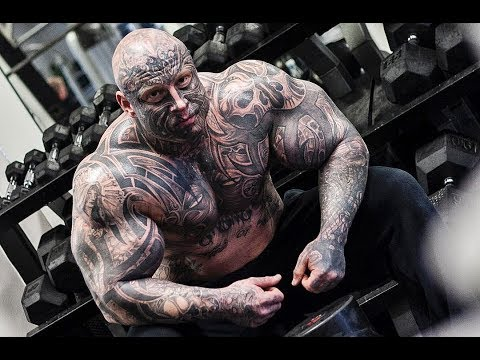
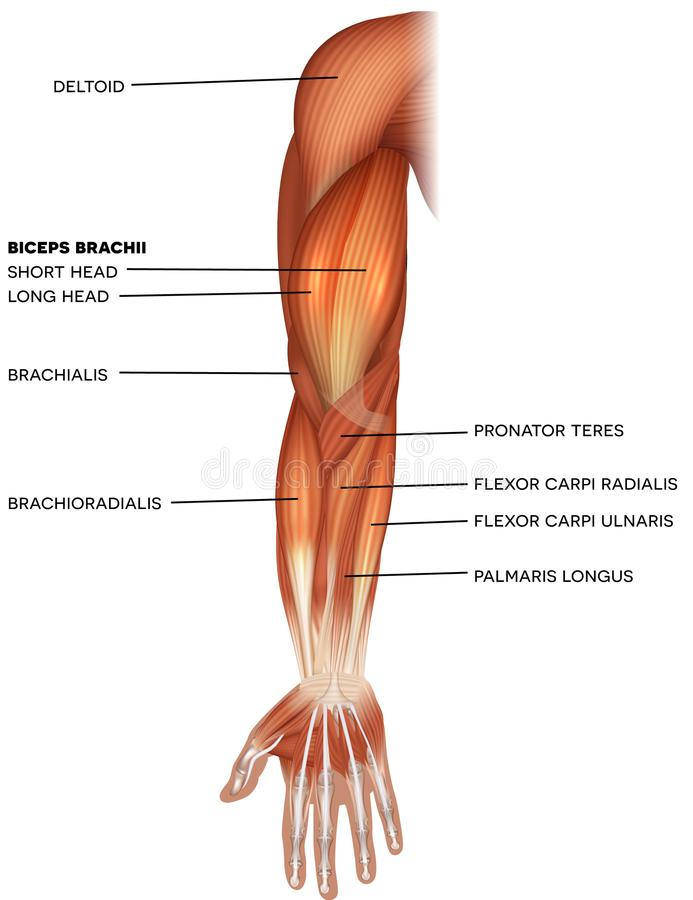
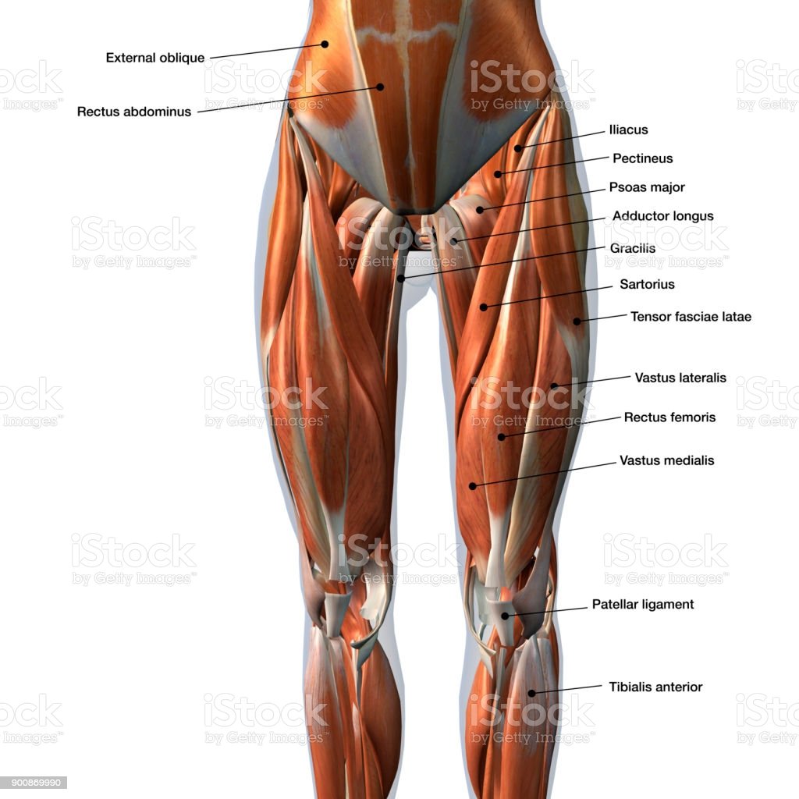
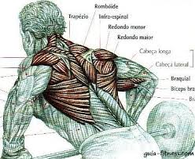
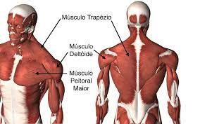

meu nome é Arthur Palhares,e hoje quero te
mostra os meus resultados que tive durante os meus anos de academia.
ao decoorrer do tempo,percebi maneiras diferentes das comuns de se
treinar,a maioria está acostumado apenas a acompanhar as maneiras padrão,
mas hoje quero te deixar um ebook totalmente gratuito para voçê ver um pouco
do basico sobre musculação.

esses foram os meus resultados com o meu metódo completo!
dicas de musculação mais importantes para hipertrofia
1 – Não fique pulando de treino em treino
2 – Cuidado com excesso de teoria
3 – Não tente reinventar a roda
4 – Dieta é tão importante quanto o treino
6 – Você não precisa trocar os exercícios toda hora
essas são apenas algumas coisas que voçê deve ter em mente,
uma coisa que vale apena destacar,divida seu treino de forma correta durante
a semana,tome cuidado pra não misturar os exercicios,a maneira correta é se treinar
uma região do corpo por dia, veja os exemplos a baixo. ↓
no primeiro dia podemos treinar os braços.

no segundo faremos um treino de perna.

já no terciro dia faremos um treino para as costas.

por ultimo iremos treinas peito e os musculos
dos ombros.

esses são seus musculos,dessa forma voçê tem uma distribuição de treino melhor para
a recuperação do seu corpo. saiba mais acessando a pagina.